Input
One grayscale page at 200 DPI. No paired page, OCR, answer text, identifier, or label enters detection.
Repository manual | classical computer vision
This manual follows the shipped detector from page-local measurements to physical box components and reading-order groups. Three real PDF exhibits carry the explanation.
One grayscale page at 200 DPI. No paired page, OCR, answer text, identifier, or label enters detection.
Polygons for physical redaction components, plus R-number groupings that express reading continuity.
The v4 audit attaches paired-release text only after detection, for evaluation rather than prediction.
Six-stage mental model
The detector keeps physical geometry separate from reading-order interpretation. Candidate volume is search activity, not predicted redactions.
The detector receives one grayscale page.
A dark mask captures strong ink and a faint mask retains weak photocopied rails.
The page is converted into candidate rails, corners, contours, and blank interiors.
Ordinary rectangles, blank contours, fragmented rails, stepped outlines, nested layers, and dense blackouts are proposed independently.
Thin red rectangles are low-level alternatives that were not emitted; red tint marks suppressed solid artifacts when present.
Each polygon is a saved physical component.
Proposal-to-verdict decision tree
Routes may nominate the same area independently. A proposal is emitted only after local scale, geometry, interior, text-crossing, and page-position checks. The rules are corpus-wide; no document ID or labeled coordinate can activate them.
Deskew the raster and estimate text-line height, reading-column bounds, dark/faint masks, and horizontal/vertical support.
Search ordinary four-sided outlines, closed blank contours, broken rails, one-wall occlusions, nested/stepped shapes, and solid blackouts.
Ordinary boxes need measured walls/corners and a compatible interior. Missing-wall rescues need aligned independent rails, blank interior, and local-scale agreement.
Reject candidates explained by glyph strokes, underlined prose, scanner frames, side-margin clutter, or visible text crossing the proposed interior.
Save accepted polygons as physical components. Only then infer reading continuity from measured contact and end-of-line to next-line flow.
R4.1 and R4.2 denote separate physical boxes in one reading unit; this label is not a merged bounding rectangle.Exhibit A | CIA-RDP79T00975A002900310001-5
A page pair where one decision cannot be made from a single border.
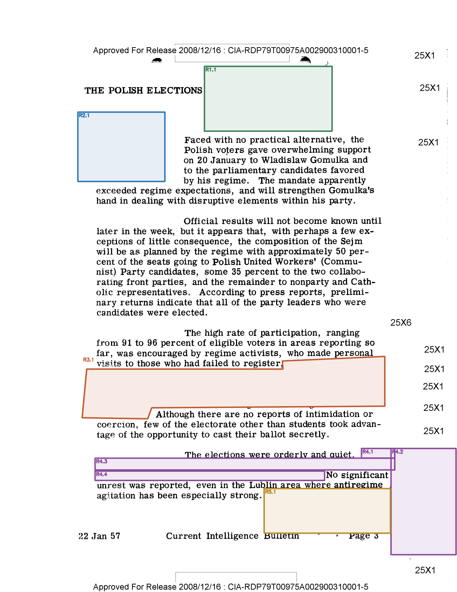
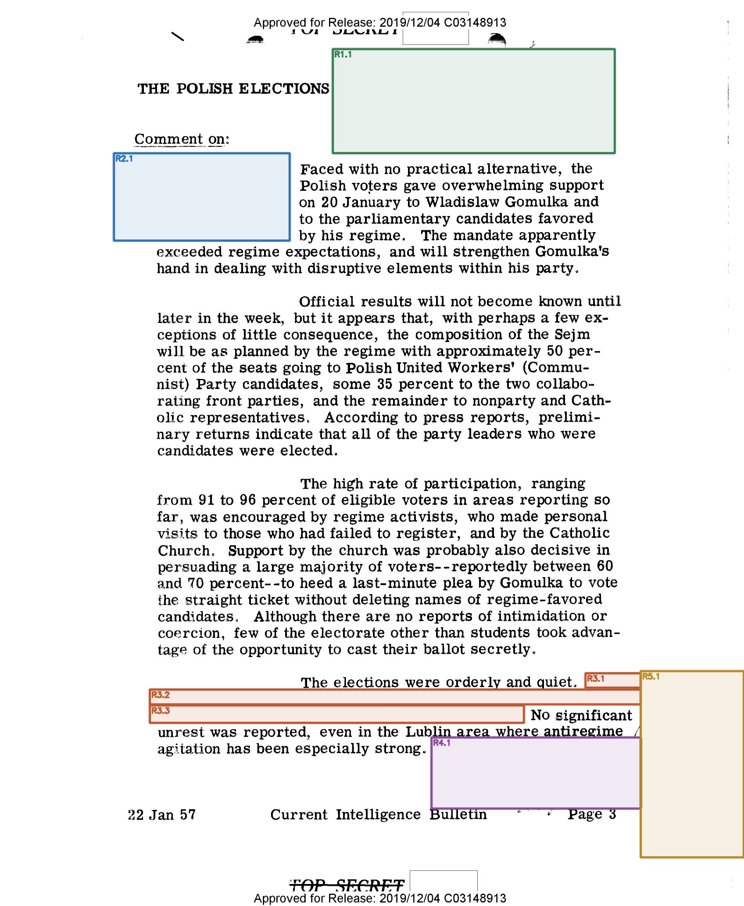
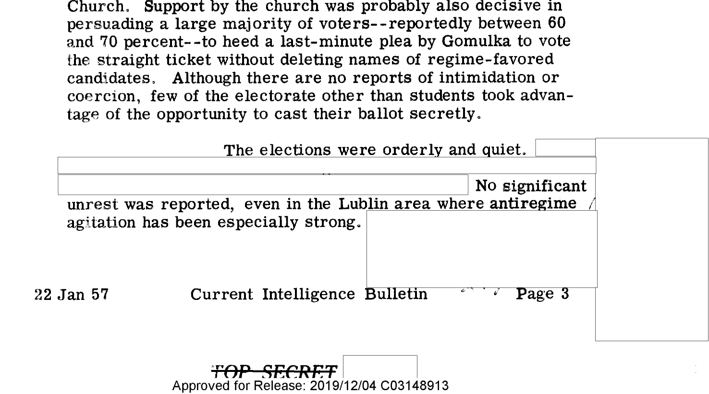
Decision chain
Multiple rails and blank slabs are recovered as separate physical components. The text-safe split prevents a broad envelope from swallowing visible prose, and the grouping pass keeps side-column material from bridging into the main paragraph.
Exhibit B | CIA-RDP79T00975A002800320001-5
One answer-blind polygon, followed by an independent 45-word Astra audit.
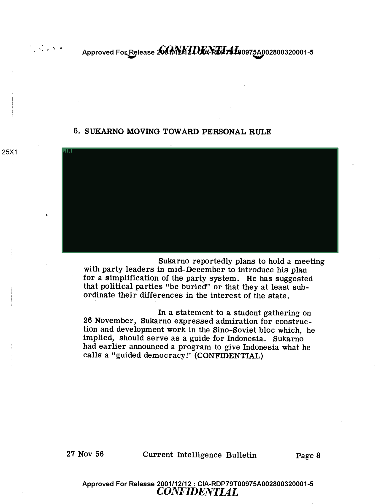
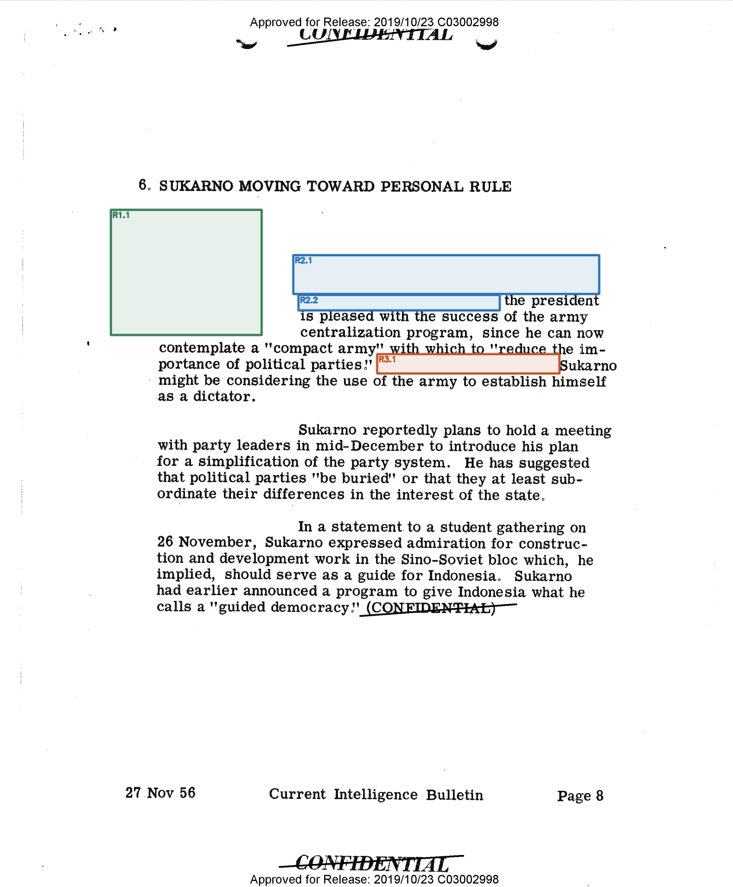
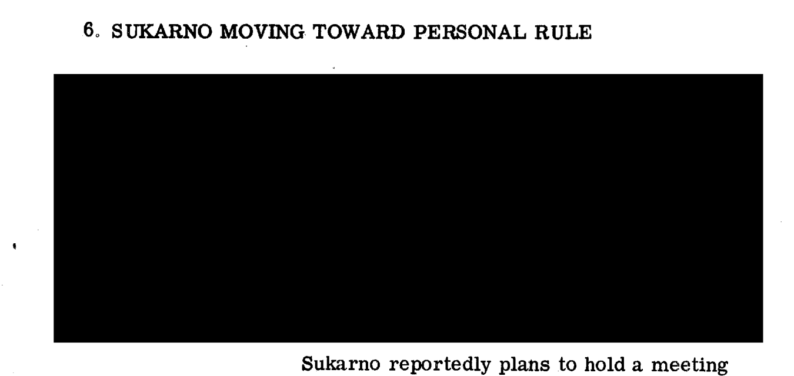
Decision chain
The earlier release contains one materially large, pitch-black rectilinear region, so the page-level blackout route emits one measured component. Only after that geometry is frozen does the audit project the later release's 45 revealed target words back to the earlier scan; all 45 fall within R1.1.
Exhibit C | CIA-RDP79T00975A000700240001-7
A skewed page where adjacent boxes must not erase the words between them.
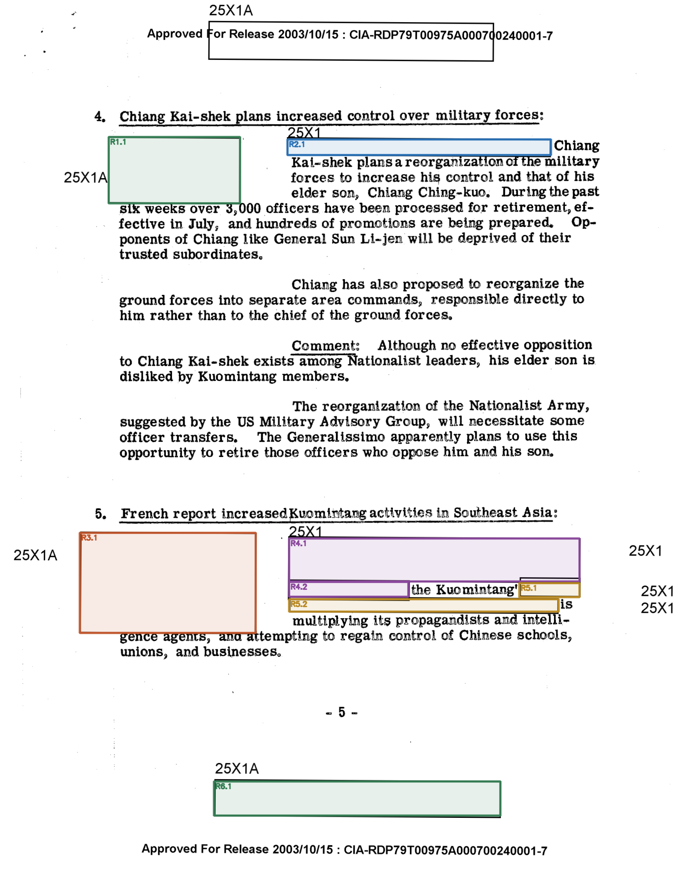
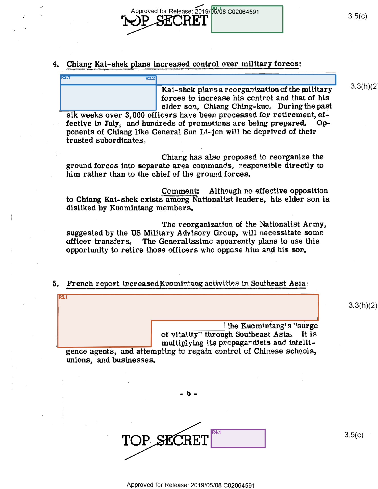
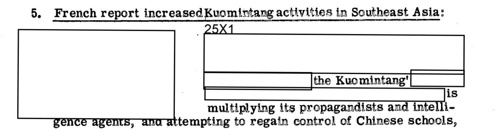
Decision chain
The broad left and right masks touch other components around visible words. Geometry is frozen first. Reading-flow logic then joins the true line continuation while keeping the opposite branch in a different R group.
Independent post-hoc audit
Astra supplies the saved semantic target and context. The CV detector has already finished before that target is localized, registered, projected, and scored. This separation prevents the answer from steering box detection.
Read the expected hidden text and its left/right context from the frozen v4 item.
Match the target against the later PDF text layer and retain exact word polygons. Astra does not provide these coordinates.
Use SIFT features and a RANSAC homography to map the later scan onto the earlier scan despite translation, scale, rotation, or rescanning.
Project each later-release word polygon into earlier-page coordinates; test its center against frozen CV geometry with line-scaled tolerance.
FULL requires at least 80% coverage for every fragment; PARTIAL begins at 30%.
Worked assignment | CIA-RDP79T00975A002800320001-5:9.0
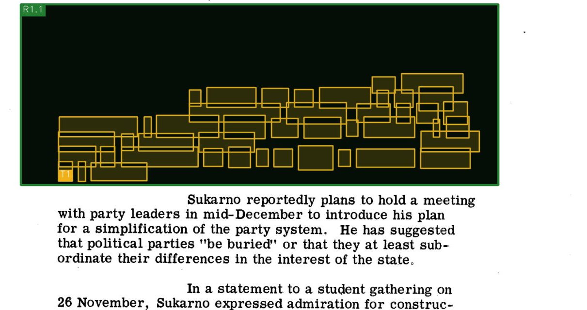
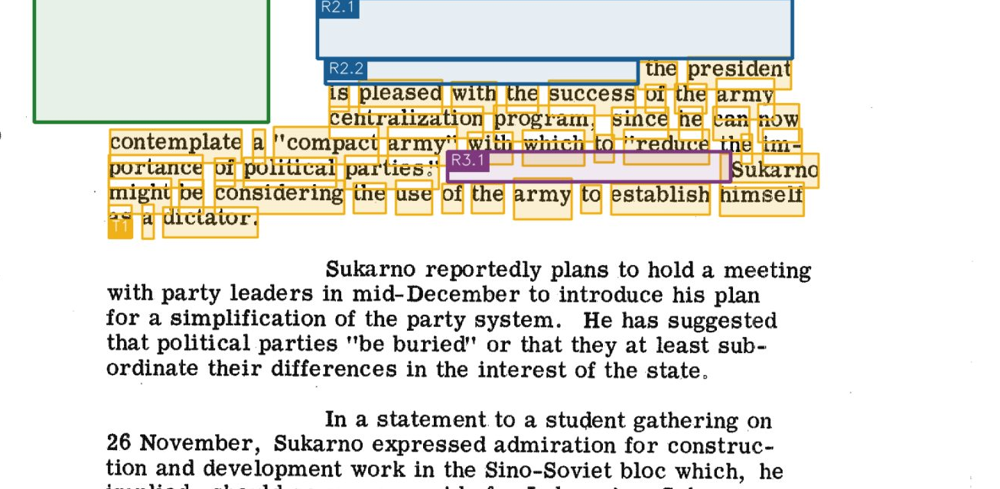
Context anchors
BeforeSUKARNO MOVING TOWARD PERSONAL RULEAfter
Sukarno reportedly plans to hold a meeting with
Text-location match: 98.9%
Saved v4/Astra target
[STILL REDACTED] the president is pleased with the success of the army centralization program, since he can now contemplate a "compact army" with which to "reduce the importance of political parties." [STILL REDACTED] Sukarno might be considering the use of the army to establish himself as a dictator.
Located in later PDF: ‘The president is pleased with the success of the army centralization program, since he can now contemplate a "compact army" with which to "reduce e im- portance of political parties? tgukarno might be considering the use of the army to establish himself as a dictator.
Result: ASSIGNED_FULL, matched to R1.1.
[STILL REDACTED] are not target words; only words actually localized in the later PDF enter the 45-word denominator. The result does not mean the CV detector transcribed the hidden words, that Astra supplied box coordinates, or that every physical redaction on the page has exhaustive semantic gold.The saved answer cannot be matched uniquely in the later PDF text layer.
The scans do not yield a reliable homography, so projection is unsafe.
The text and registration pass, but projected words do not reach detected polygons.
Some projected target words are covered, but at least one fragment misses the full threshold.
Geometry may be correct while R-number reading-unit membership differs from manual annotation.
Repository contract
Every component retains its polygon, bounds, provenance route, and score. The downstream audit may compare that geometry with revealed text, but it cannot change the detector output.
{
"region_id": "R4",
"component_count": 2,
"components": [{
"component_id": "R4.1",
"polygon_xy": [[x, y], ...],
"proposal_source": "...",
"proposal_score": 14.2
}]
}python -m box_scripts.v4_audit --plan
python -m box_scripts.v4_audit \
--workers 6 --overwrite